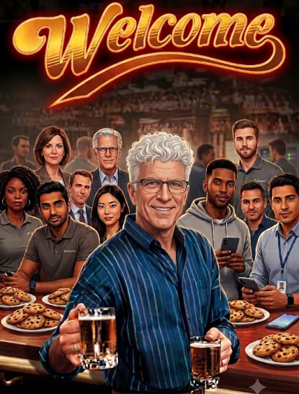
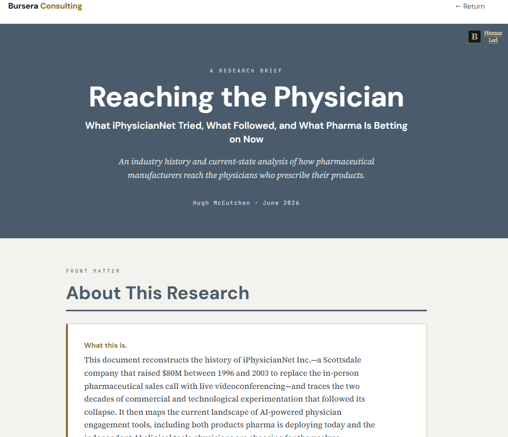
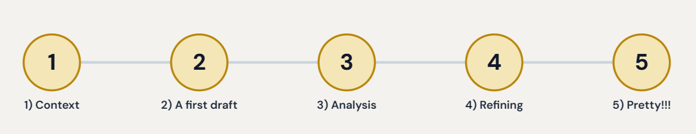
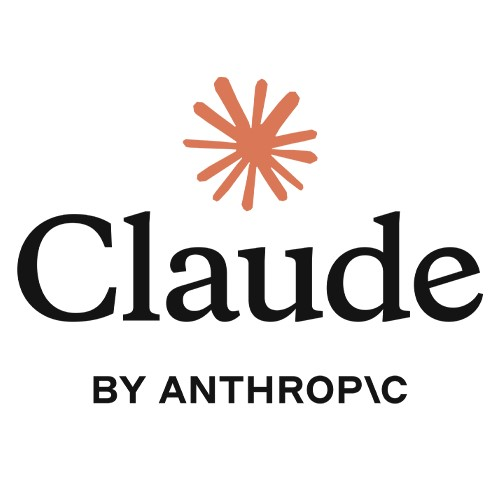
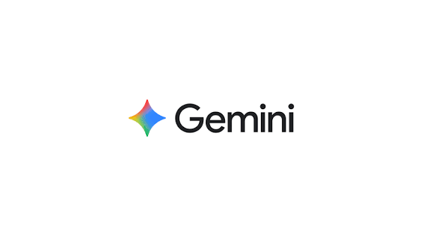
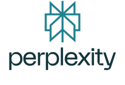

Always loved researching things
These tools are curiosity machines... but I was blowing up the threads

Amazing tool for curiosity and one shot research... lousy for ongoing work that needs to produce consequential work products
These tools are curiosity machines... but I was blowing up the threads
So helpful for organizing and structuring but they kept forgetting
Amazing to learn and collect but couldn't produce the final product
LLM helps me be better


A better understanding of how to work with Chat when you really want to have
a confident answer on a complicated topic.
Something you are curious about
Build a full context for your later research
Define how you want to understand the data
Use the tools to slice it and dice it
Use the tools to help you tell the story
If you have good data, the tools can give you good diagrams
If you are creative and clear you can get great story telling illustrations
fundamentals of the tools
iterate iterate iterate
judgement and leadership is yours
if it isn't written down it doesn't exist
We will build on your same topic though the different classes
This is Lesson one of five and will result in quality piece of personal research that you have confidence in. The big idea to come away with is that Context Matters. Everything we do is in Context.

The series is designed to teach you progressively more powerful methods using progressively more complex features of Claude and other tools. Level 200 and above require a Pro subscription to your chosen Chat tool. Level 500 and above are for those who plan to use the Bursera Platform and want to have a methodology that is managed by the Platform. All classes are wrapped around whatever subject(s) spark your curiosity and are designed to provide concrete research products that you have confidence in.
Your first research paper
The Project Concept as a knowledge center
Skills and holding context over time
The parts of a personal research platform
Introducing the Bursera platform
The Bursera Methodology
Managing the Context is a LOT. LLM is not easy to be good with but it is easy to play with and if you are curious and have the right mindset you will figure it out. The Interns are so agreeable it is disconcerting.
The firm ran a pilot nobody in leadership wanted to own. Six interns, out of Roxbury Community College in Boston. Everyone agreed they would be a handful. Somebody had to take them, so Beverly gave them to Luke.
Luke had spent twenty years as the person who wrote everything himself, methodical and detailed and a little proud of both. He worked from home now, with two kids and a cat, and he had never managed six of anything.
This was the first day. In theory it was about training the interns. It turned out the training he needed was his own.




Let's discuss!!!
Here is what I got back when I did this myself across the 4 tools. There are similarities but all are different. What will make your prompts powerful is YOU.
At your own pace, draft out a good initial prompt and then hold a minute....
Raise your hand when you think you have a good prompt
Create a fresh thread
"I want to have a full x page research report that I can use for purpose Y"
"Ask me any final questions that can help make this more effective."
"Here is the Prompt:'
[Paste it in]
Finished Early? Try running your prompt in a second tool.
LEAD THOSE IN!!!
Help me make the series better!
Getting Started · v1.0 · training_class_101 (BEBURS)
Facilitator: Hugh McCutchen
Markdown co-edited directly by Hugh in Typora, in parallel with Claude's engine-side rebuilds, over one Cowork session — 12 exchanges
Proofed in a separate Claude (Sonnet) thread for alignment to Bursera ideas and class timing/pacing — 2 exchanges
Narrative and image drawn from Bursera's "The Interns" (burseraconsulting.com/the-interns/)
Bursera html-slides engine, v1.6
Markdown source → single-file HTML
Assembled and refined in Cowork
August 2026